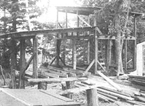
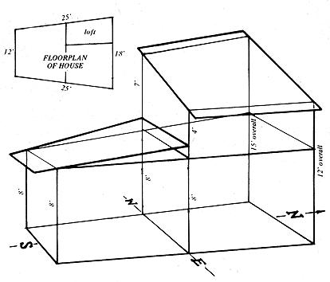

Some time ago I determined that I would take as much responsibility as possible for the conditions of my life and, toward that end, I worked in New York City editing manuscripts for a year until I had saved enough money to make a break to the woods. Last June I used those savings to buy into a 180 acre homesteading community in New Hampshire and now-three months after beginning a house on "my" six acres-my friend, Van, and I are thriving in what looks to be a long, cold winter.
From my writing desk in the loft of our new home I can watch the sun pass from east to west and the wind blow through the trees outside . . . and I can do it in the comfort of crackling wood heat because I am surrounded by one window that faces east, two that look south and one on the loft's west side that gives me a view across a spectacular swamp. Thus, the loft is filled with sun all day long and is a good place to keep our parsley and sage growing through the winter. It's also my favorite part of the house because it's the height to which much of the warm air rises from the downstairs stoves.
From my second story perch, I can let my mind's eye wander over the Good Life that Van and I have built for ourselves: seven cords of wood cut (half by hand with a crosscut and bucksaw) and stacked in the dooryard, a Glenwood parlor stove, a funky old Household cooking range with an extra large firebox, two loving woods dogs, a kitten . . . and a very beautiful, warm, well-lighted spacey house which we completed in October. It's hard to believe that, once I had those six acres, we built our cozy, satisfying home in three months for less than $150 cash-out-of-pocket!
We brought the building in on that tight budget by following the ideas in Rex Roberts' book, YOUR ENGINEERED HOUSE, and by constructing our year-round lodge almost entirely from recycled materials. We got all the necessary lumber and windows free by simply knocking on the doors of folks with old barns and asking if we could tear the structures down for the beams and siding.
The method worked amazingly well. If you're high enough (and we were . . . on homesteading), people always seem to turn up at the best possible moment to give you the things you need. We had beautiful sets of old windows, chicken houses, barns, sap houses-even an old boat house-offered to us. The potential swaps (our labor for their lumber) far exceeded our needs and we ended up taking down only a sap house, the boat house and a barn with magnificent beams of 7" x 7" white pine.
1 found this dismantling an appropriate prelude to constructing my own home. Neither Van nor I had ever built a house (I had hardly handled a hammer) and tearing down the old structures taught us something about the strength and function of different materials and tools.
We spent two months-June and July-living in airy tunnels made of bent saplings and plastic, gardening on soil that had never been cultivated before, gathering our second-hand materials and laying out the dimensions of the glorified cabin in an irregular shape to fit the slope of its site: 25' from northeast corner to southeast, 12' from southeast to southwest, approximately 25' from southwest to northwest and 18' from the northwest to northeast corner. We had no further plans or designs for the house beyond these dimensions except for filling the 12' south-facing side with windows. Van and I wanted the structure to grow with us as we were shaped by living and homesteading in the woods a mile from the nearest neighbor.
From August 1st to 15th, we poured foundation posts of concrete mixed with small rocks collected from our garden (there's plenty of free rocks in New Hampshire!). Being overcautious amateur architects, we made 15 of the supports (far more than we needed) and I became supremely bored with the job. I also disliked buying the necessary four bags of cement after receiving all that free lumber. What a pleasure it was to finish the last post and get on with the sills!
Sills are the horizontal beams which support a house's framework and we cut ours from heavy barn timbers, laid them on the foundation posts and creosoted them against rot (the creosote was our second store-bought item).
With the sills in place, we started on the framework . . . which required decisions about ceiling height, roof slope and the number of levels we'd have in the house.
Rex Roberts, advocating the ease of living on one level with its simplified heating and building problems, warns against second floors. Roberts' reasoning had us convinced that a full second level could well confine our stoves' heat to the ground floor . . . but we still wanted to live as far above the ground as practical. So we settled on the idea of a loft covering only one-fourth of the house's area (8' x 12') with an opening across its front through which warm air could rise to heat the upper reaches of our edifice.
The idea was not only a good one, it was too good . . . because we soon realized that-while heat would surely rise from the stoves to our 8' x 12' loft-the warm air would also rise to the unused, open, three-quarters of the second level . . . leaving most of the ground floor too cold. Van finally solved the problem with the brilliant solution of building the structure with two different roof levels.
We divided the projected house in half and, knowing that most of our time on the ground floor would be spent in the kitchen, faced that room to the south (for maximum light) and topped it with a low roof (to insure warmth). The other (north) end of the lodge was allowed to soar to a height of 15' on its west side to accommodate a west-facing loft.
We stood 8' beams on four of the six points where rafters would begin and end: one on each of the south corners of the house and one in the middle of each of the long 25' sides. We set a 12' beam upright on the northeast corner and for the northwest corner of the building, we cut a standing dead spruce, trimmed it to a length of 15' and chiseled out two notches on its south and east side where horizontal beams would later be joined 8' above ground level.
The spruce was chosen because it was already dead (having just bought the six acres of logged-over land in June, I still had an aversion to cutting live trees) and because spruce is a soft wood which is easy to hew and chisel. Three of our friends helped us lift the fifteen footer into place, brace it and toenail it in position.
When our six vertical beams were in place, we took down five more standing dead spruce, hewed a flat surface on what would later be the top side of each and notched these soon-to-be horizontal timbers where they would meet the standing beams. We then placed the five joists parallel to the ground, eight feet above its surface and running east to west (1) atop the south corner uprights, (2) spanning the two middle vertical timbers, (3) connecting the two north corner uprights at their eight-foot level and (4 and 5) one each from the north corner vertical timbers at the eight-foot level southward to the tops of the middle uprights. All a matter of clean, simple logic.
Van and I next completed the frame for the highest part of the house by adding a 4' upright to the middle eastern vertical timber (making it a total of 12' tall) and setting a 7' beam atop the upright in the middle of the western side of the house so that it matched its 15' spruce companion in height. This would give the roof over the loft area a slant of three feet (15 minus 12), west to east . . . and a 1'h pitch (one-and-one-half inches of slope for every foot of roof).
The two 15' points were then connected by a horizontal beam (as were the two 12' points) to give the rafters for this part of the house something to rest on. We divided the south wall of the loft into thirds by setting two oak 4 x 4's (graduated in height) vertically between the cabin's middle east-to-west horizontal beam and the roof line of the loft above. The basic framing of the house was then completed by setting vertical 2 x 6's every two feet along the sills around the circumference of the entire lodge. These 2 x 6's, of course, were graduated in height along the sloping sides of the kitchen section and the north face of the house to give the roofs proper support.
At that point, the structure still swayed and shook when we climbed on it (it would get steadier as we closed it in) but I was proud of our work. The hand-cut spruce in the building's skeleton gave it a log cabin down-home effect and the old barn lumber exuded an aesthetic feeling of strength, age and wisdom. Our new home was already a tempered and weathered part of the woods.
We framed in the floor of the loft with a 12' oak timber run north-to-south eight feet above ground level through the tall half of the house . . . and five 8' oak beams, spaced two feet on center, spanning the distance between the west side of the cabin and the oak twelve-footer. By laying temporary floorboards on top of this structure, we gained easy access to the upper end of the lower roof.
Van and I framed the top supports for that roof by toenailing foot-long vertical 2 x 4's every two feet along the house's middle east-to-west horizontal beam to support a horizontal 2 x 4 upon which we then placed the upper end of the 2 x 6 rafters (one for each vertical foot-long 2 x 4) for the lower roof. The rafters ran down to the southern-most horizontal joist, giving a "one pitch" (a slope of one inch every foot) to that roof. Rex Roberts claims that's all the slope one needs although local hunters tell us it's not enough for the terrific snow loads we'll have in winter. We decided to build both roofs extra strong and take the chance . . . mainly because I have big plans for putting a plastic greenhouse on the south-facing roof in the spring and I wanted it pitched at the minimum possible slope.
After the rafters for the lower roof were in place, we added a set of sub-rafters perpendicular across their top so that-for optimum strength-the boards for that roof could be run the same way as the rafters (YOUR ENGINEERED HOUSE, page 134).
Putting on the first layer of roof boards was easy and fun after the relatively hard work of framing the house. We extended the sheathing out over the south wall (the one scheduled to have the most windows) just far enough to shade out the high sun of summer but admit the warming rays of the low winter sun directly into the kitchen.
For the high roof, we first ran our two end rafters east to west and spanned them with horizontal oak beams across the proposed roof from each of the two oak 4 x 4's on the south side of the loft to the corresponding 2 x 6's on the loft's north side. Thus, the center rafters are supported twice in the middle as well as on each end.
We then notched the center rafters to rest on their four supports and spiked them in place two feet apart across the roof. Sub-rafters (again, atop and perpendicular to the rafters) came next . . . with sheathing boards over all, crossing the subrafters and running lengthwise down the roof.
At this point there was absolutely nothing further we could do without aluminum paper (it's inexpensive, radiates warmth back into a house and Roberts recommends it in preference to fiberglass batts for insulation) and a trip to town was necessary.
We kept our trucking around to a minimum by driving down to a Fitchburg, Massachusetts cut-rate building supply company and getting everything we needed to finish the house in one fell swoop: seven 500-foot rolls of aluminum building paper, some aluminum roofing material, a roll of mineralized roofing paper and rubberoid cement. The trip cost us about $120 . . . which made me more determined than ever not to spend any more money on the house if I could possibly avoid it.
After our one major jaunt to the big city we were more ready for hard work than ever. My energy had reached such a high level that I simply had to do a certain amount of physical labor each day to work it off. I was never happier.
Van and I first stapled a layer of aluminum paper over the roofing boards we had already nailed down. Then we sectioned off two-foot squares across the roof's surface by nailing down light spacers (strips of wood about 1" wide obtained at no cost from a sawmill). Atop the open two-foot-by-two-foot squares, we stapled another layer of aluminum to make a trapped air space.
Since most of a building's winter heat loss is through its roof, we then laid down another layer of open spacer squares and another layer of aluminum paper (creating a second dead air space) before topping it all with a second layer of boards. Over the boards we stapled yet another sheet of aluminum, spread our tar-like cement over that and laid down the strips of roofing material.
YOUR ENGINEERED HOUSE had taught us that black is the worst possible color to put on the outside of a house (even though black roll roofing is still sold) because it absorbs heat in the summer and conducts the heat out in the winter. White is ideal . . . but I couldn't put anything as stark as a white root into the velvet subtlety of the woods, so we settled on slate green . . . a sort of neutral tone as far as conduction of heat is concerned.
Our finished roofs were four inches thick, positively airtight, very stiff, solid . . . and strong enough to allow me to put a magnificent greenhouse on the lower one in the spring.
After the roofs were done, we stapled a plastic vapor barrier across our cabin's sills and spiked 2 x 6 floor joists east to west, spaced two feet apart, onto the sills. We left one three-foot square opening for a small indoor root cellar and another space for a future chimney and put recycled (from one of the dismantled houses) fiberglass insulation between all the other floor supports. Over this we stapled aluminum paper and laid the floor boards perpendicular to the 2 x 6 joists. The boards along the floor's edge were notched to fit around the vertical framing of the house before they were nailed down. Someday, when we salvage more lumber, we'll add a crossing layer of floor boards.
Our house was now ready for walls and Van and I began planning window placement so that we could get started building them.
We put no windows at all on the north side of the house. It faces the woods (thus isn't open to much light anyway) and the solid wall plus trees gives us much protection against that chilly old north wind in the winter. On the east wall, which is the first one we boarded up, we located one window high on the northeast corner facing the loft and-beside it-cut a 2 x 2' air vent which we board over in the winter. The air vent is necessary since none of our windows open. Permanent windows are far simpler to install (just add extra vertical 2 x 4's where needed and nail in 2 x 4 crosspieces to complete a frame) and account for much less heat loss than windows that open and close.
The kitchen has another two windows in its east wall, two large ones across its south face and one tall pane of glass set into the west side. There are two more windows-a big one and a little one with vents above-in the living room area of the west wall and the loft has a large pane of glass set into its west side and facing our four seasonally inhabited Great Blue Heron nests.
Lastly, we positioned two windows in the south wall of the loft to overlook the lower roof and keep the upper level sunlit nearly all day. The eleven windows really open up the house and make me feel like I'm living with the trees. We compensated for their heat loss by making extra efforts to seal the walls airtight.
Those walls are a sandwich of one layer of boards, aluminum paper, spacers nailed into a pattern of open two-foot squares, aluminum paper and a second layer of clapboards. This method of construction-if you can get the boards free-insulates as well as fiberglass for much less money. It does require more construction time but, being near-permanent members of New Hampshire's hardcore unemployed, we have all the time in the world.
The door in the northeast corner of our cabin is constructed in the same manner as the building's walls and roof and, in spite of the many windows, we're warm and comfortable in all parts of the house even though our two stoves are inefficiently placed side by side.
To complete the outside of our new home, I stapled plastic around its lower edge, extended the plastic to the ground and buried it in a trench. This banks and closes the area beneath the house and keeps the temperature there about 35° Fahrenheit all winter . . . ideal for root storage.
Inside, we've left the cabin open rather than partitioned off into rooms, and the effect is one of sweeping airy space . . . making it the most unconfining home I've ever lived in.
We made enough bookshelves along the north wall for a good-sized library and lined the west side of the kitchen with shelves for packaged foods, dishes and cooking utensils. Once the two stoves were in (with their pipes run out windows and air vents) I lined the cabin's walls with the most beautiful "wallpaper" in the world: free-for-the-taking birchbark. I just cut squares of the bark off dead trees and tacked it between the lodge's rustic exposed beams with carpet tacks. It makes the walls light and spacey and sends the sunrays back in bluishpink shadows. I'm also putting up lots of wall hangings that both insulate and add color to the interior.
In addition to the nearly $120 Van and I spent for roofing and aluminum paper, we only squandered another $20 for the cement, creosote, nails, staples and caulking compound that went into our house . . . not bad for a luxurious, medium-sized home. Fortunately for me, Van already had all the tools we needed when we began construction.
The whole experience has convinced me that almost anyone can build a comparable house for the same amount of money if they'll just take the time (and have the good will) to go around canvassing for old, reusable lumber. Tearing down and rebuilding has also given me an appreciation of functional beauty, a growing respect for the arts of engineering and design, a will to be accurate and-best of all-a home which grew out of the harmony and freedom of mind given me by a new life in the woods.
|
 |
 |
|